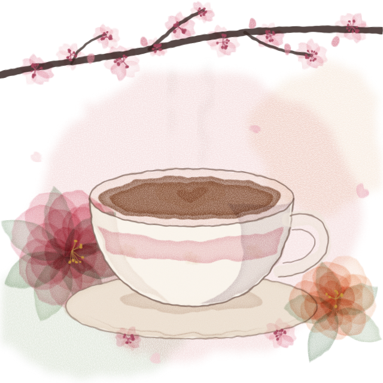
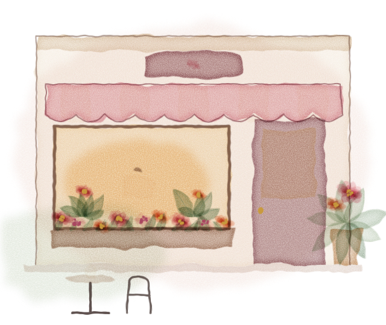

I · Frühstück
Den Tag sanft beginnen
Schon ab acht Uhr morgens sitzen Sie bei Kaffee und Croissant zwischen unseren Blumen, bevor der Tag richtig losgeht.
- Avocado-Brot, der Liebling unserer Gäste
- Croissants & Toasts
- Sandwiches, herzhaft belegt
Café · Frühstück · Brunch · Kuchen
Ein kleines Café in Niederrad, voller Blüten. Hier serviert ein freundliches Team Frühstück und Brunch, hausgemachte Kuchen und Kaffee, den man fast immer auch vegan bekommt.

Unser Angebot
Jedes Stück zeigt etwas, das es bei uns gibt. Suchen Sie sich eins aus, wir schneiden es Ihnen an.
I · Frühstück
Schon ab acht Uhr morgens sitzen Sie bei Kaffee und Croissant zwischen unseren Blumen, bevor der Tag richtig losgeht.
II · Brunch
Beim Brunch mit Freunden oder der Familie dürfen Sie gern so lange bei uns bleiben, wie das Gespräch dauert.
III · Hausgemachte Kuchen
Unsere Kuchen backen wir selbst, und die Auswahl wechselt nach Lust und Laune.
IV · Vegan
Fast jedes Heißgetränk bereiten wir auf Wunsch mit Pflanzenmilch zu, und in der Vitrine steht fast immer auch ein veganer Kuchen.
V · Kaffee, Tee & Matcha
Zum Cappuccino gehört bei uns Latte Art, den Tee bringen wir Ihnen in der Kanne, und der Matcha Latte leuchtet grün.
VI · To go & Anlässe
Wenn es schnell gehen muss, nehmen Sie Kaffee und Kuchen mit. Für eine Feier oder ein Treffen im Büro sprechen Sie uns an.
Kleine Karte
Ein Auszug. Die ganze Karte und die Kuchen des Tages finden Sie bei uns vor Ort.

Über uns
Wer bei uns in der Triftstraße die Tür öffnet, steht mitten in einem kleinen Blumenmeer. Manche nehmen auf dem Weg zur Arbeit schnell einen Kaffee mit, andere bleiben sonntags zum Brunch oder nachmittags auf ein Stück Kuchen.
Viele unserer Gäste kommen aus der Nachbarschaft, und es freut uns, dass sie regelmäßig vorbeischauen.
Was unsere Gäste sagen (sinngemäß aus Bewertungen)
Vereinfachte Skizze, nicht maßstabsgetreu.
Besuch
Reservierung
Reservierungen nehmen wir telefonisch entgegen.